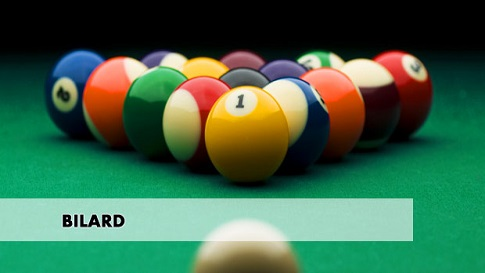

1. Opis gry
* Snooker może być rozgrywany przez dwóch lub więcej zawodników, grających niezależnie lub jako strony. Ogólne zasady gry to: Każdy z zawodników używa tej samej bili Białej jako rozgrywającej i tych samych dwudziestu jeden bil do rozgrywania - piętnastu bil czerwonych o wartości 1 punkt każda i sześciu bil kolorowych: Żółtej o wartości 2 punkty, Zielonej - 3 punkty, Brązowej - 4 punkty, Niebieskiej - 5 punktów, Różowej - 6 punktów oraz Czarnej liczonej za 7 punktów.
* Zdobywanie punktów z kolejnych zagrań w podejściu danego zawodnika realizowane jest przez przemienne wbijanie bil Czerwonych i kolorowych, dopóki Czerwone są na stole, a następnie wbijanie kolorowych w rosnącej kolejności ich wartości.
* Punkty zdobyte w zagraniu dodawane są do punktów rozgrywającego.
* Punkty karne za faule są dodawane do punktów przeciwnika.
* Taktyka stosowana podczas frejmu to pozostawianie bili białej za bilą nierozgrywaną tak, by następny zawodnik znalazł się w pozycji snooker. Jeżeli zawodnik lub strona ma strate punktową większą niż liczba punktów możliwa do uzyskania z bil pozostałych na stole, wówczas pozostawienie pozycji snooker zwiększa szanse uzyskania punktów z faulu.
* Zwycięzcą frejmu jest strona lub zawodnik
o uzyskujący więcej punktów;
o któremu frejm został poddany lub
o któremu przyznano frejma na podstawie przepisów w punkcie 12c
* Zwycięzcą meczu jest strona lub zawodnik
o wygrywający więcej frejmów lub wymaganą liczbę frejmów;
o uzyskujący większą ogólną liczbę punktów, jeśli tak zostało ustalone lub
o któremu przyznano mecz.
* Zwycięzcą rozgrywki jest strona lub zawodnik wygrywający więcej meczów lub, przy grze na sumaryczną liczbę punktów, uzyskujący najwyższą liczbę punktów.
2. Ustawienie bil
* W momencie rozpoczynania każdego frejmu bila biała znajduje się w pozycji w ręce, a bile do rozgrywania ustawione są na stole w następujący sposób: Bile Czerwone w formie ciasno upakowanego trójkąta równobocznego, z bilą wierzchołkową na osi podłużnej stołu ponad Punktem Piramidy, z pozostawieniem bili Różowej jak najbliżej Czerwonych, ale bez dotykania jej, oraz podstawą trójkąta od strony bandy górnej i równolegle do niej,
* Żółta w prawym rogu Strefy "D",
* Zielona w lewym rogu Strefy "D",
* Brązowa w Punkcie Środka Linii Bazy,
* Niebieska w Punkcie Centralnym,
* Różowa w Punkcie Piramidy,
* Czarna w Punkcie Głównym.
3. Sposób gry
* Zawodnicy określają porządek gry przez losowanie lub w inny, wzajemnie uzgodniony sposób. Ustalony tak porządek gry pozostaje niezmieniony przez cały frejm, z wyjątkiem przypadku, gdy zawodnik nakazuje przeciwnikowi ponowną grę po faulu.
* Zawodnik lub strona otwierająca zmienia się w każdym frejmie podczas meczu.
* Zawodnik otwierający gra z pozycji w ręce. Frejm rozpoczyna się, gdy bila biała zostanie ostatecznie ustawiona na stole i wejdzie w kontakt z końcówką kija, oraz:
o kiedy zagranie zostało wykonane,
o nastąpiło wyraźne określenie kierunku uderzenia bili białej.
* Zagranie jest prawidłowe, jeżeli nie zostanie naruszona żadna z zasad, opisanych poniżej w punkcie 13.
* W pierwszym zagraniu każdego podejścia, dopóki wszystkie Czerwone nie znikną ze stołu, bilą rozgrywaną jest bila Czerwona lub wolna bila, deklarowana jako Czerwona. Wartość każdej bili Czerwonej lub wolnej bili deklarowanej jako Czerwona, wbitej w tym samym uderzeniu jest zaliczana.
* Jeżeli bila Czerwona lub wolna bila, deklarowana jako Czerwona, zostanie wbita, ten sam zawodnik wykonuje następne zagranie, w którym bilą rozgrywaną jest dowolnie wybrana przez rozgrywającego bila kolorowa. Jeżeli ta zostanie wbita, jest zaliczana i ponownie ustawiana na
o Break jest kontynuowany przez przemienne wbijanie bil Czerwonych i kolorowych, dopóki wszystkie bile Czerwone nie znikną ze stołu. Jeśli to ma zastosowanie, po wbiciu ostatniej Czerwonej bili rozgrywana jest bila kolorowa.
o Bile kolorowe zostają bilami rozgrywanymi w kolejności ich rosnących wartości w chwili gdy kolejna bila kolorowa zostanie wbita. Rozgrywający gra w następnym zagraniu kolejną bilę kolorową jako rozgrywaną. Wyjątkiem jest przypadek opisanyw punkcie 14.
* Bile Czerwone wbite do kieszeni lub wybite poza stół, nie są ustawiane ponownie na stole, niezależnie od tego, że zawodnik może odnieść korzyść z faulu. Wyjątki od tej zasady przytoczone są w punktach 11b, 13h.
* Jeżeli rozgrywający w wykonanym zagraniu nie zdobywa punktów lub popełnia faul, jego podejście kończy się i następny zawodnik gra bilę białą z pozycji, w której biała zatrzymała się na polu gry lub z pozycji w ręce, jeśli biała znajduje się poza polem gry.
4. Ustawianie bil kolorowych
* Każda bila kolorowa, która wpadnie do kieszeni lub zostanie wybita poza stół, musi być ponownie ustawiona na stole przed wykonaniem nastepnego uderzenia, aż do ostatecznego wbicia, zgodnie z przepisem w punkcie 3f. Zawodnik nie ponosi odpowiedzialności za błędy sędziego, związane z niewłaściwym ustawieniem bil na stole.
* Jeżeli bila kolorowa została błędnie ustawiona na stole po ostatecznym wbiciu podczas gry końcowej, opisanej w punkcie 3f, jest usuwana ze stołu bez kary zaraz po wykryciu błędu i gra jest kontynuowana.
* Jeżeli zagranie zostało wykonane z bilą lub bilami nieprawidłowo ustawionymi, są one w kolejnych zagraniach uznane za ustawione prawidłowo. Bile kolorowe, których w nieprawidłowy sposób brakuje na stole, ustawione zostaną:
o bez kary, jeśli zostanie stwierdzone, że brak bili na stole wynika z poprzedniego przeoczenia;
o z nałożeniem kary, jeśli rozgrywający zagrał, zanim sędzia zdążył ustawić bilę (bile) lub mógł sprawdzić efekt ustawienia bil.
* Jeżeli bila kolorowa ma być ustawiona na swoim punkcie wyznaczonym i punkt ten jest zajęty, należy ją ustawić na najwyższym wolnym punkcie wyznaczonym.
* Jeżeli do ustawienia jest więcej niż jedna bila kolorowa i ich punkty wyznaczone są zajęte, pierwszeństwo ma bila (bile) o większej wartości.
* Jeżeli wszystkie punkty wyznaczone są zajęte, bile kolorowe ustawia się możliwie najbliżej punktów własnych, pomiędzy punktem własnym a najbliższą częścią górnej bandy.
* W przypadku bil Różowej i Czarnej, jeżeli zajęte są wszystkie punkty wyznaczone oraz przestrzeń między własnymi punktami wyznaczonymi i najbliższą częścią górnej bandy, bile ustawia się na linii centralnej stołu możliwie najbliżej i poniżej własnych punktów wyznaczonych.
* We wszystkich przypadkach ustawiana bila kolorowa nie może dotykać innej bili.
* Bila kolorowa, by została uznana za umiejscowioną prawidłowo, musi być ustawiona ręką w punkcie określonym niniejszymi Przepisami.
5. Kolejność wbijania bil kolorowych
* Po umieszczeniu wszystkich bil czerwonych w łuzach, należy wbić bile kolorowe w podanej poniżej kolejności: Żółta o wartości 2 punkty,
* Zielona - 3 punkty,
* Brązowa - 4 punkty,
* Niebieska - 5 punktów,
* Różowa - 6 punktów oraz
* Czarna - 7 punktów.
6. Faule
* Jeżeli popełniony zostanie faul, sędzia bezzwłocznie ogłasza FAUL. Jeżeli rozgrywający nie wykonuje zagrania, jego podejście kończy się natychmiast i sędzia ogłasza wartość kary.
* Jeżeli zagranie trwa, sędzia czeka z ogłoszeniem wysokości kary do zakończenia zagrania.
* Jeżeli faul nie zostanie ogłoszony przez sędziego lub nie zostanie zareklamowany przez zawodnika oczekującego przed rozpoczęciem następnego zagrania, jest uznany za niebyły.
* Bila kolorowa, nieprawidłowo umieszczona na punkcie wyznaczonym, pozostaje na tej pozycji; jeżeli jednak znajduje się lub znajdzie poza polem gry, jest ustawiana prawidłowo.
* Wszystkie punkty zdobyte w breaku przed ogłoszeniem faulu są zaliczane, ale rozgrywający nie otrzymuje punktów za żadną bilę wbitą w zagraniu, w którym ogłoszony został faul.
* Następne zagranie grane jest z punktu, w którym bila biała ostatecznie znieruchomiała, lub z pozycji w ręce, jeżeli biała opuściła pole gry.
* Jeżeli w tym samym zagraniu popełniono więcej niż jeden faul, nakładana jest kara za najwyżej karany faul.
* Zawodnik popełniający faul:
o otrzymuje karę przewidzianą w punkcie 13, oraz
o musi grać następne zagranie, jeśli życzy sobie tego następny w kolejności do gry zawodnik.
7. Gra z pozycji "biała w ręce"
* Bila biała, grana z pozycji w ręce, musi być ustawiona w strefie "D" lub w dowolnym punkcie linii ograniczających strefę "D". Sędzia może odpowiedzieć, czy bila jest prawidłowo ustawiona (to znaczy, czy nie znajduje się na zewnątrz strefy "D").
* Jeżeli końcówka kija dotknie bili białej podczas jej pozycjonowania i sędzia jest pewien, że rozgrywający nie próbował wykonać zagrania, wówczas bila biała nie jest jeszcze w grze.
8. Uderzenie dwóch bil jednocześnie
Nie jest dozwolone jednoczesne uderzenie przez bilę białą, podczas pierwszego kontaktu z bilami, dwóch bil innych niż bile Czerwone lub bila wolna i bila rozgrywana.
9. Bile dotykane
* Jeżeli bila biała ostatecznie nieruchomieje dotykając innej bili lub bil, które są lub mogą być bilami rozgrywanymi, sędzia ogłasza bilę dotykaną (DOTYK) i wskazuje, którą bilę lub bile dotyka bila biała.
* Jeżeli zostanie ogłoszona bila dotykana, rozgrywający musi odegrać od niej bilę białą bez wprawienia w ruch bili dotykanej, inaczej jest to pchnięcie.
* Odegranie bili białej bez wprawienia w ruch bili dotykanej nie jest faulem, jeżeli:
o bila dotykana jest bilą rozgrywaną,
o bila dotykana może być bilą rozgrywaną i rozgrywający deklaruje ją jako rozgrywaną, lub
o bila dotykana może być bilą rozgrywaną, a rozgrywający deklaruje i realizuje pierwszy kontakt bili białej z inną bilą rozgrywaną.
* Jeżeli bila biała ostatecznie nieruchomieje dotykając lub niemal dotykając innej bili, która nie jest bilą rozgrywaną, sędzia, jeśli jest pytany, czy bile dotykają się, odpowiada TAK lub NIE. Rozgrywający musi odegrać bilę białą bez poruszenia bili nierozgrywanej, jednak pierwszy kontakt bili białej musi nastąpić z bilą rozgrywaną.
* Jeżeli bila biała dotyka jednocześnie bili rozgrywanej i nierozgrywanej, sędzia wskazuje tylko bilę rozgrywaną jako bilę dotykaną. Gdy rozgrywający zapyta sędziego, czy bila biała dotyka również bili nierozgrywanej, musi otrzymać taką informację.
* Jeżeli sędzia ma pewność, że poruszenie bili dotykanej w momencie zagrywania nie zostało spowodowane przez rozgrywającego, nie ogłasza faulu.
* Jeżeli bila, nie będąca w dotyku z bilą białą w momencie sprawdzania przez sędziego, później wchodzi w kontakt z białą przed wykonaniem zagrania, pozycja bil na stole musi być poprawiona przez sędziego.
10. Bila na krawędzi kieszeni
* Jeżeli bila wpadnie do kieszeni nie będąc dotkniętą przez inną bilę, nie będąc jednocześnie elementem zagrania, jest ponownie ustawiana w poprzedniej pozycji i żadne związane z nią punkty nie są brane pod uwagę.
* Jeżeli bila taka mogłaby być dotknięta przez jakąkolwiek bilę biorącą udział w zagraniu, to:
o jeśli nie nastąpiło naruszenie niniejszych Przepisów, bile ustawiane są na poprzednich pozycjach i ten sam rozgrywający powtarza to samo zagranie lub wykonuje inne, według własnego uznania;
o jeśli nastąpił faul, powodujący nałożenie kary na rozgrywającego, bile ustawiane są na poprzednich pozycjach i następny zawodnik ma do dyspozycji opcje jak po faulu.
* Jeżeli bila balansuje chwilę na krawędzi kieszeni, a następnie wpada do kieszeni, jest zaliczana i nie jest ustawiana na poprzedniej pozycji.
11. Pozycja snooker po faulu
* Jeżeli po faulu bila biała znajduje się w pozycji snooker, sędzia ogłasza wolną bilę (WOLNA BILA) Jeżeli zawodnik następny w kolejności gry decyduje się wykonać zagranie,
o może on zadeklarować dowolną bilę jako bilę rozgrywaną, i
o bila tak deklarowana nabiera znaczenia i wartości bili rozgrywanej, jednak po wbiciu jest ustawiana na punkcie wyznaczonym według własnej wartości.
* Jest faulem, jeżeli bila biała:
o nie ma pierwszego kontaktu z bilą deklarowaną albo jednocześnie z bilą deklarowaną i rozgrywaną, lub
o znajdzie się w pozycji snooker, wymuszonej przez bilę deklarowaną jako wolna bila, wobec wszystkich bil Czerwonych lub bili rozgrywanej, z wyjątkiem sytuacji, gdy jedynymi bilami do rozgrywania, pozostałymi na stole, są bile Różowa i Czarna.
* Jeżeli wolna bila zostanie wbita, jest ustawiana na punkcie wyznaczonym i zaliczana jest wartość bili rozgrywanej.
* Jeżeli bila rozgrywana zostanie wbita, po pierwszym kontakcie bili białej z bilą deklarowaną lub jednocześnie z bilą deklarowaną i rozgrywaną, bila rozgrywana jest zaliczana i pozostaje poza polem gry.
* Jeżeli zostaną wbite obydwie bile, deklarowana i rozgrywana, zaliczana jest tylko bila rozgrywana, chyba że rozgrywaną jest bila Czerwona, kiedy zaliczana jest każda wbita bila. W tym drugim przypadku wolna bila ustawiana jest ponownie na swoim punkcie wyznaczonym, a bila rozgrywana pozostaje w kieszeni.
* Jeżeli zawodnik faulujący otrzymał polecenie dalszej gry, ogłoszenie wolnej bili traci ważność.
12. Faul i chybienie
* Rozgrywający powinien, maksymalnie wykorzystując swoje umiejętności, próbować trafić bilę rozgrywaną. Jeżeli sędzia uzna tę zasadę za naruszoną, ogłasza FAUL I CHYBIENIE, z wyjątkiem przypadków, gdy na stole pozostała tylko bila Czarna lub gdy położenie bili rozgrywanej uniemożliwia jej trafienie. W tym drugim przypadku należy uznać, że rozgrywający próbował trafić bilę rozgrywaną pod warunkiem, że gra on bezpośrenio lub pośrednio w kierunku bili rozgrywanej z siłą, zdaniem sędziego, wystarczającą, by osiągnąć bilę rozgrywaną, jeśli w międzyczasie nie nastąpi potrącenie przez białą innej bili lub bil. Po ogłoszeniu faulu i chybienia następny zawodnik może nakazać faulującemu ponowną grę z pozycji powstałej lub poprzedniej. W tym drugim przypadku bila rozgrywana musi być taką samą bilą, jak przed ostatnim zagraniem, to znaczy:
o dowolną Czerwoną, jeśli Czerwona była bilą rozgrywaną,
o rozgrywaną bilą kolorową, jeśli Czerwonych nie ma już na stole, lub
o bilą kolorową do wyboru rozgrywającego, jeśli bilą rozgrywaną była bila kolorowa po wbiciu Czerwonej.
* Jeżeli rozgrywający, wykonując zagranie, nie trafia pierwszym uderzeniem bili rozgrywanej, a możliwe jest trafienie w linii prostej jakiejkolwiek części jakiejkolwiek bili, która jest lub może być bilą rozgrywaną, sędzia ogłasza FAUL I CHYBIENIE, chyba że któryś z zawodników potrzebuje snookera przed wykonaniem lub w wyniku wykonania tego zagrania, a sędzia jest przekonany, że chybienie nie było zamierzone.
* Jeżeli chybienie zostanie ogłoszone na podstawie przepisu (b) i ponadto możliwe było centralne trafienie bili rozgrywanej lub takiej, która mogła być rozgrywana (w przypadku bil Czerwonych dotyczy to w pełni widocznej średnicy dowolnej bili Czerwonej, która nie jest przesłaniana przez bilę kolorową), wówczas:
o następna nieudana próba trafienia pierwszym uderzeniem bili rozgrywanej w zagraniu wykonywanym z tej samej pozycji jest ogłaszana jako FAUL I CHYBIENIE niezależnie od różnicy punktowej, oraz
o jeśli zostanie nakazana gra z pozycji poprzedniej, faulujący musi być ostrzeżony przez sędziego, że trzeci taki faul spowoduje przyznanie frejmu przeciwnikowi.
* Jeżeli bila biała zostanie ustawiona w pozycji poprzedniej na podstawie przepisu zakładającego, że możliwe jest trafienie w linii prostej jakiejkolwiek części jakiejkolwiek bili, która jest lub może być bilą rozgrywaną, i rozgrywający podczas przygotowywania się do zagrania fauluje dowolną bilę, włączając w to bilę białą, chybienie nie może być ogłoszone, jeśli zagranie nie zostało wykonane. W takim przypadku nałożona zostaje odpowiednia kara oraz:
o następny zawodnik może grać sam lub nakazać faulującemu ponowną grę z pozycji zastanej na stole, lub
o następny zawodnik może poprosić sędziego o ustawienie wszystkich poruszonych bil w poprzedniej pozycji i nakazać faulującemu ponowną grę z tej pozycji, oraz
o jeżeli powyższa sytuacja ma miejsce podczas kolejnych chybień, wcześniejsze ostrzeżenie o możliwości przyznania frejmu przeciwnikowi zostaje zrealizowane.
* Wszelkie inne chybienia ogłaszane są zgodnie z uznaniem i decyzją sędziego.
* Po chybieniu i życzeniu następnego zawodnika o ustawienie bili białej w poprzedniej pozycji, inne poruszone bile mogą pozostać na nowych pozycjach, chyba że sędzia uzna, iż faulujący ma lub może mieć z tego korzyść. W tym drugim przypadku część lub wszystkie poruszone bile mogą być ustawione w poprzednich pozycjach, według uznania sędziego. W obu przypadkach nieprawidłowo wybite poza pole gry bile kolorowe mają być ustawione na punktach wyznaczonych lub w poprzednich pozycjach.
* Przy ustawianiu bil lub bili w poprzedniej pozycji po chybieniu, obaj zawodnicy, faulujący i następny w grze, pytani są o zgodność ustawienia z poprzednim, po czym decyzja sędziego jest ostateczna.
* Jeżeli podczas konsultacji opisanej w punkcie (g), którykolwiek z zawodników dotknie bili znajdującej się w grze, jest karany tak, jakby to on był rozgrywającym, przy czym nie zmienia to kolejności gry. Dotknięta bila ustawiana jest według uznania sędziego, nawet jeżeli została wzięta ze stołu.
* Następny zawodnik może zapytać sędziego o jego zamiary co do ponownego ustawienia bil innych niż bila biała w przypadku, gdy przed wykonaniem zagrania ma on prawo żądania gry przeciwnika z poprzedniej pozycji. Sędzia winien określić swoje zamiary.
13. Kary
* Wszystkie faule karane są wartością czterech punktów karnych, chyba że w podpunktach (a) do (d) przewidziana jest kara wyższa. Karane są: wartością bili rozgrywanej
o uderzenie bili białej więcej niż jeden raz;
o uderzenie, gdy zawodnik nie dotyka podłogi stopą;
o gra poza kolejnością;
o nieprawidłowa gra z pozycji biała w ręce, włączając w to uderzenie otwierające;
o ominięcie wszystkich bil do rozgrywania przez bilę białą;
o spowodowanie wpadnięcia bili białej do kieszeni;
o ustawienie snookera za wolną bilą;
o spowodowanie przeskoku;
o gra kijem odbiegającym od standardowego;
o naradzanie się z partnerem, sprzeczne z zasadami.
* wartością wyższą z wartości: bili rozgrywanej lub bili branej pod uwagę
o uderzenia, gdy któraś z bil znajduje się jeszcze w ruchu;
o uderzenia, zanim sędzia zakończył ustawianie bil kolorowych na punktach wyznaczonych;
o spowodowanie wpadnięcia bili nierozgrywanej do kieszeni;
o spowodowanie pierwszego kontaktu bili białej z bilą nierozgrywaną;
o spowodowanie pchnięcia;
o dotknięcie bili w grze inne, niż dotknięcie bili białej końcówką kija podczas wykonywania zagrania;
o spowodowanie wybicia bili poza stół.
* wartością bili rozgrywanej lub wartością wyższą z dwu bil branych pod uwagę, przy spowodowaniu pierwszego kontaktu bili białej jednocześnie z dwiema bilami innymi niż bile Czerwone lub wolna bila i bila rozgrywana.
* wartością siedmiu punktów karnych, jeżeli rozgrywający
o używa bili poza stołem w dowolnym celu;
o używa dowolnych przyrządów do pomiaru odstępów lub odległości;
o gra bile Czerwone, lub Czerwoną po wolnej bili deklarowanej jako Czerwona, w kolejnych zagraniach;
o używa innej bili niż Biała jako bili rozgrywającej w dowolnym zagraniu po rozpoczęciu frejmu;
o nie zadeklaruje bili rozgrywanej, gdy jest o to proszony przez sędziego;
o po wbiciu Czerwonej lub wolnej bili deklarowanej jako Czerwona popełni faul przed zadeklarowaniem bili kolorowej.
14. Zakończenie frejmu, meczu, rozgrywki
* Jeżeli na stole pozostała tylko Czarna, jej pierwsze wbicie lub faul kończy frejma. Wyjątkiem jest, gdy spełnione są jednocześnie obydwa niżej wymienione warunki:
o zawodnicy mają jednakową liczbę zdobytych punktów, oraz
o sumaryczne punkty nie mają znaczenia
* Jeżeli obydwa warunki wymienione w punkcie a są spełnione, wówczas
o Czarna ustawiana jest na Punkcie Głównym;
o zawodnicy losują kolejność gry;
o kolejny rozgrywający gra z pozycji biała w ręce;
o następne wbicie lub faul kończy frejma.
* Jeżeli zwycięzcę meczu lub rozgrywki wskazać mają punkty sumaryczne, i punkty sumaryczne mają jednakową wartość po zakończeniu ostatniego frejmu, zawodnicy grający ostatni frejm postępują według procedury o ponownym ustawieniu Czarnej, opisanej w punkcie b.
15. Sytuacja bez wyjścia
* Jeżeli sędzia uzna powstałą pozycję za sytuację bez wyjścia, lub mogącą się w taką zmienić, winien zaproponować zawodnikom natychmiastowe powtórzenie frejmu. Jeśli któryś z zawodników nie wyrazi na to zgody, sędzia zezwala na dalszą grę z zastrzeżeniem, że sytuacja musi się rozwiązać w wyznaczonym okresie, zwykle po trzech zagraniach każdej ze stron, ale sędzia może wyznaczyć inny okres. Jeżeli pozycja po upływie wyznaczonego okresu w zasadzie nie zmieni się, sędzia anuluje wszystkie zdobyte punkty, ustawia bile jak przed rozpoczęciem frejmu oraz ten sam zawodnik wykonuje zagranie otwierające;
* obowiązuje ta sama kolejność gry.
16. Poddanie gry
* Zawodnik może poddać grę tylko wtedy, gdy jest rozgrywającym. Przeciwnik ma prawo przyjąć lub odrzucić propozycję poddania, która w przypadku wyboru wariantu kontynuowania gry staje się nieważna.
* Jeżeli mają znaczenie punkty sumaryczne i frejm zostaje poddany, wartość punktowa bil pozostałych na stole dodawana jest do punktów strony przeciwnej. W tym przypadku każda bila Czerwona liczona jest za osiem punktów, a każda bila kolorowa nieprawidłowo pozostająca poza stołem traktowana jest jako prawidłowo wbita.

1. Cel gry
Ósemka jest grą deklarowaną, rozgrywaną przy użyciu bili białej i 15 kolorowych bil ponumerowanych. Kolorowe bile
składają się z dwóch grup, przy czym jeden z zawodników rozgrywa bile z numerami 1 - 7 (bile całe), drugi zawodnik bile z
numerami 9 - 15 (tzw. połówki). Zawodnik, który zgodnie z numerami wbije do luz wszystkie bile swojej grupy a na końcu,
w oddzielnym uderzeniu, prawidłowo wbije bile z numerem 8, wygrywa partie.
2. Deklarowanie
Nie jest wymagane deklarowanie bil i łuz jasno wynikających z sytuacji na stole. W momencie posiadanie jakichkolwiek
wątpliwości przeciwnik może prosić o zadeklarowanie bili i luzy. Zagrania od band i uderzenia kombinowane nie są
traktowane za oczywiste. W takich przypadkach musi być zadeklarowana, bila oraz łuza. Przy deklarowaniu uderzenia nie
jest konieczne deklarowanie szczegółów takich, jak liczba odbić od band, liczba karamboli itp.
Bile, wbite do luz z faulem, nie są z nich wyciągane, niezależnie od tego, do której grupy nalezą. Uderzenie otwierające nie
jest deklarowane. Zawodnik otwierający grę może kontynuować podejście tylko wtedy, gdy wbije do łuzy przynajmniej
jedną bile kolorową.
3. Ustawienie bil
Bile muszą być ustawione przy pomocy trójkąta w górnej części stołu, z zastrzeżeniem, iż bila z numerem 8 musi znajdować
się w środku trójkąta. Bila wierzchołkowa trójkąta musi znajdować się w punkcie głównym stołu, natomiast 2 kolejnych
wierzchołków trójkąta muszą należeć do różnych grup.
4. Zmiana otwierającego
Zawodnik, który wygrał rozgrywkę o rozbicie, podejmuje decyzję o tym, kto wykona uderzenie otwierające. W grach
indywidualnych zawodnicy otwierają kolejne partie na przemian..
5. Faule przy skokach i uderzeniach kijem trzymanym pionowo
Przy stosowaniu reguły " faul tylko na białej ", gdy mecz nie jest sędziowany, zawodnik powinien wiedzieć, że faul następuje
wówczas, gdy przy uderzeniu mającym spowodować skok bili, jej ruch po luku lub przy uderzeniu kijem trzymanym
pionowo poruszy się bila nierozgrywana, nad którą lub obok, której miało zostać przeprowadzone zagranie, bez względu na
to, czy poruszona została dłonią, kijem, podpórką czy w skutek pchniecia.
6. Prawidłowe uderzenie otwierające (definicja)
By wykonać prawidłowe uderzenie otwierające, zawodnik otwierający musi, grając z pozycji "biała z bazy ", albo wbić do
łuzy przynajmniej jedną bile kolorową bądź doprowadzić do bandy przynajmniej cztery bile kolorowe. Jeśli tego nie
wykona, ogłaszany jest faul i zawodnik wychodzący może albo zaakceptować pozycje bil na stole i kontynuować grę lub
zażądać ponownego ustawienia bil w trójkącie i zadecydować, który z zawodników ma wykonać uderzenie otwierające.
7. Biała opuszcza pole gry przy prawidłowym uderzeniu otwierającym
Jeśli zawodnik przy prawidłowym uderzeniu otwierającym wybija białą poza pole gry to są możliwe 3 wyjścia:
- bile wbite do luz pozostają w nich ( wyjątek stanowi bila z numerem 8),
- zawodnikowi otwierającemu przyznawany jest faul i…
- stół jest otwarty.
Jeżeli zawodnik wchodzący do gry poprawia położenie białej na bazę, wówczas nie może grac bezpośrednio żadnej bili
kolorowej znajdującej się na bazie, z wyjątkiem gdy biała najpierw opuści bazę, a potem powróci na nią, uderzając
znajdującą się tam bile.
8. Kolorowa wyskakuje poza stół przy uderzeniu otwierającym
Gdy zawodnik otwierający podczas uderzenia otwierającego wybije bile kolorową poza pole gry, ogłaszany jest faul i
przeciwnik może albo zaakceptować położenie bil na stole i kontynuować grę albo poprawić położenie białej na bazę.
9. Bila z numerem 8 opuszcza pole gry przy uderzeniu otwierającym
Jeśli podczas uderzenia otwierającego bila z numerem 8 zostanie wbita do luzy, wówczas zawodnik otwierający może
zażądać ponownego rozstawienia bil w trójkącie lub ponownego ustawienia bili z numerem 8 na stole i samemu
kontynuować grę.
Jeśli podczas uderzenia otwierającego zarówno bila biała jak i z numerem 8 zostaną wybite poza stół, przeciwnik może
zażądać albo ponownego ustawienia trójkąta albo ponownego ustawienia bili z numerem 8 na stole i kontynuować grę z
pozycji "biała z bazy ".
10. Stół otwarty ( definicja )
Stół jest otwarty, jeśli grupy bil (całe i „połówki”) nie są jeszcze przyporządkowane zawodnikom. Przy otwartym stole
możliwe jest wbijanie bili całej poprzez bile z paskiem i odwrotnie.
Bezpośrednio po uderzeniu otwierającym stół jest zawsze otwarty. Gdy stół jest otwarty, dozwolone jest wbicie
zadeklarowanej bili całej lub bili z paskiem za pośrednictwem bili całej, bili z paskiem lub bili z numerem 8. Jeśli przy
otwartym stole bila z numerem 8 jest zagrywana jako pierwsza, żadna bila cała ani bila z paskiem nie jest zaliczona na konto
zawodnika zagrywającego. W takiej sytuacji zawodnik kończy swoje podejście i odchodzi od stołu. Wszystkie wbite bile
pozostają w luzach. Zawodnik wchodzący do gry może wówczas zadeklarować dowolną bile, mając wciąż stół otwarty. Przy
otwartym stole wszystkie nieprawidłowo wbite bile nie są wyciągane z łuz.
11. Wybór grupy bil
Wybór grupy bil nigdy nie zostaje określony przy uderzeniu otwierającym, bez względu na to, czy wbite są bile jednej, czy
obu grup. Stół jest zawsze otwarty bezpośrednio po uderzeniu otwierającym. Grupa bil zostaje przyporządkowana
określonemu zawodnikowi, gdy ten prawidłowo wbije zadeklarowaną bile po uderzeniu otwierającym.
12. Prawidłowe uderzenie ( definicja )
Przy wszystkich uderzeniach, wyłączając uderzenie otwierające oraz to gdy stół jest otwarty, zawodnik musi najpierw trafić
bile swojej grupy a następnie albo wbić bilę kolorową bądź białą lub dowolną kolorową bile doprowadzić do bandy.
Dozwolone jest granie na własną bilę przez bandę, jednak po zetknięciu białej z kolorową albo bila kolorowa musi zostać
wbita do luzy albo biała lub kolorowa musi dojść do bandy.
13. Gra bezpieczna
Jeśli zawodnik po wbiciu własnej bili chce ze względów taktycznych odejść od stołu i zakończyć swoje podejście wówczas
przed uderzeniem musi zgłosić grę bezpieczną (grę na odstawną). Gra bezpieczna jest traktowana jako uderzenie
prawidłowe. Jeśli zawodnik podczas uderzenia bezpiecznego chce wbić bile, musi przed uderzeniem zadeklarować swojemu
przeciwnikowi grę bezpieczną. Jeśli tego nie zrobi i wbije własną bile, musi kontynuować podejście. Wszystkie bile, wbite
podczas gry bezpiecznej, pozostają w luzach.
14. Punktacja
Zawodnik dopóty kontynuuje swoje podejście, dopóki nie powiedzie mu się próba wbicia zadeklarowanej bili swojej grupy w
prawidłowym uderzeniu. W momencie wbicia wszystkich bil swojej grupy zawodnik może grać bilę z numerem 8.
15. Kary po faulu
Przeciwnikowi przysługuje możliwość poprawienia pozycji białej bili na całym stole, nie ma konieczności gry z bazy z
wyjątkiem faulu w uderzeniu otwierającym. Zasada ta przeciwdziała graniu celowych fauli, mogących utrudnić grę
przeciwnikowi. Przy poprawianiu pozycji białej na całym stole zawodnik może ustawiać białą bile dłonią lub dowolną częścią
kija, w dowolnym punkcie stołu, w razie potrzeby więcej niż raz. Jeśli biała jest juz ustawiona w pozycji do gry, każde jej
dotkniecie, które nie jest prawidłowym uderzeniem, uznawane jest jako faul.
16. Uderzenia kombinowane
Uderzenia kombinowane są dozwolone, jednak bila z numerem 8 nie może być grana jako pierwsza. Wyjątkiem jest
zagranie przy otwartym stole.
17. Nieprawidłowo wbite bile
Bila jest wbita nieprawidłowo wtedy, wówczas gdy:
- w trakcje uderzenia popełniony zostanie faul albo
- nie zostanie zrealizowana deklaracja bili i luzy
- przed uderzeniem zadeklarowano grę bezpieczną.
Nieprawidłowo wbite bile nie są wyciągane z łuz..
18. Bile kolorowe wybite poza stół
Jeśli bila kolorowa zostanie wybita poza pole gry, jest to traktowane jako faul i podejście zawodnika kończy się. Jeśli ze stołu
zostanie wybita bila z numerem 8, partia jest przegrana. Wszystkie wybite ze stołu bile ustawiane są ponownie na linii
powrotów, zgodnie z kolejnością ich numerów.
19. Zagrywanie bili z numerem 8
Kiedy zagrywana jest bila z numerem 8, popełnienie faulu lub wbicie białej nie oznacza przegrania partii, za wyjątkiem gdy
bila z numerem 8 wpadnie do dowolnej luzy lub zostanie wybita poza pole gry. Zawodnik wchodzący do gry ma prawo
poprawienia pozycji białej na całym stole.
20. Przegranie partii
Zawodnik przegrywa partie, jeśli zajdzie jeden z wymienionych przypadków:
- popełni faul w uderzeniu, w którym wbił bile z numerem 8 za wyjątkiem wbicia bili z numerem 8 przy uderzeniu
otwierającym )
- bile z numerem 8 wbije w jednym uderzeniu z ostatnią bilą kolorową
- bile z numerem 8 wybije poza pole gry
- bile z numerem 8 wbije do innej luzy niż deklarowana.
- bije bile z numerem 8, wcześniej niż uzyska prawo do jej zagrywania.
21. Sytuacja patowa
Jeśli po trzech kolejno po sobie następujących uderzeniach obu zawodników (łącznie po sześciu uderzeniach ) wydaje się być
pewne, ze żaden z zawodników nie podejmuje poważnej próby wygrania partii partie rozpoczyna się od początku, przy
czym rozpoczyna zawodnik, który zaczynał przerwaną partie.